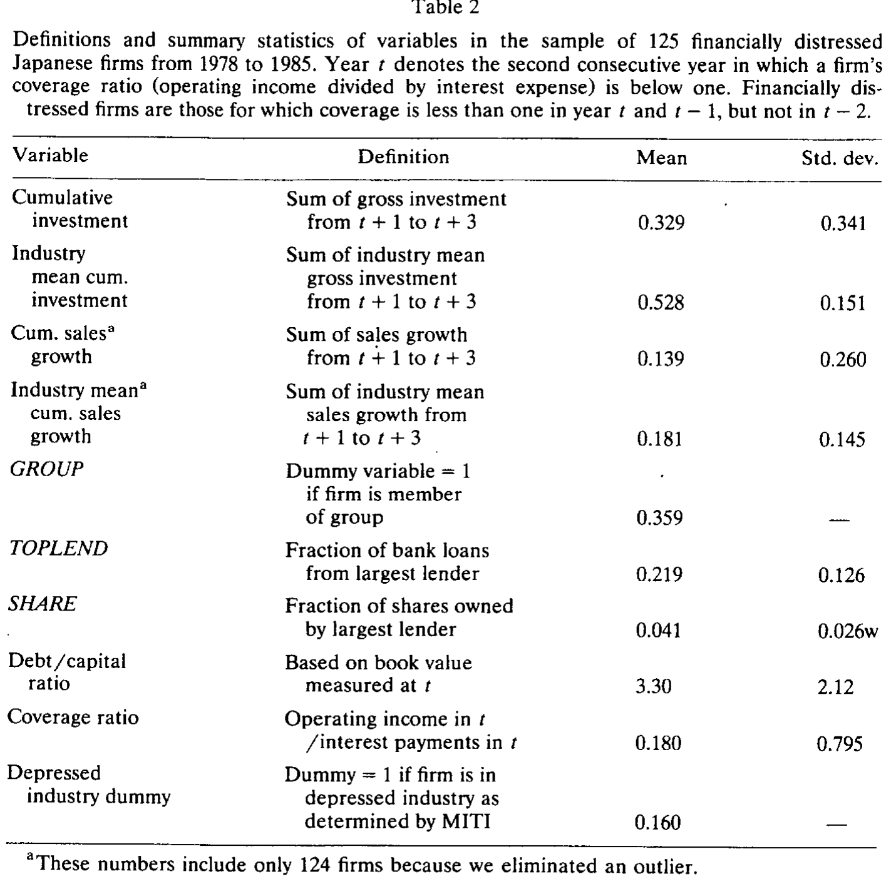
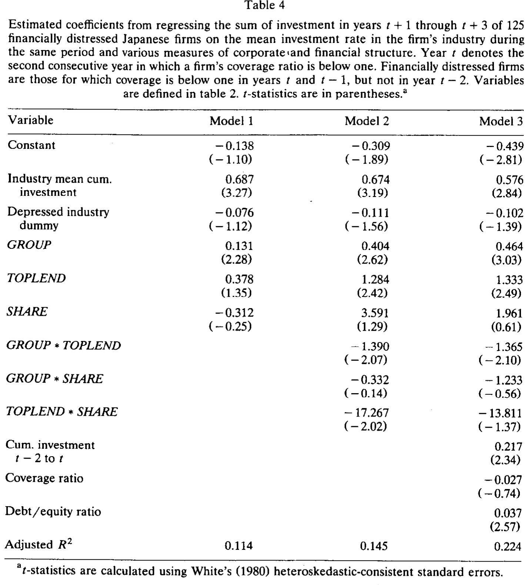
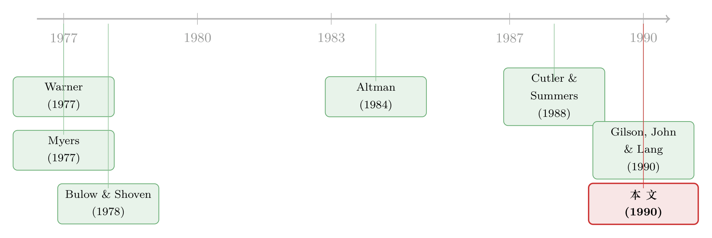

困境企业的『靠山』：为什么有主银行的日本公司摔得更轻
本文读的是 Hoshi, Kashyap & Scharfstein (1990, JFE)：财务困境之所以「昂贵」，不在于律师费和破产程序，而在于债权人太多、信息太散，谈判谈不拢。作者用日本的财团 (keiretsu) 与主银行 (main bank) 制度做实验——那些债权高度集中、信息高度透明的企业，在陷入困境之后投资更多、卖得更多。换句话说，财务困境的真正代价，是被一大群互相搭便车的债权人「逼」出来的。
1 一个被忽略了几十年的问题：困境到底贵在哪里
先抛一个看似简单、却几乎没人能回答的问题：当一家公司还不起债，会发生什么？
教科书里有两套针锋相对的说法。一套乐观：只要公司本身还有前途，债务总能被重新谈判 (renegotiate) 下来，财务困境 (financial distress) 不会留下任何实质伤痕——债主们当然不会傻到把一只会下金蛋的鹅杀掉。Haugen 和 Senbet (1978) 早就论证过破产成本「微不足道」，Jensen (1989) 后来更是把高杠杆当成一剂能逼出效率的良药。另一套则悲观得多：债权人各怀心思，彼此的诉求互相打架，结果哪怕集体清算明明是亏的，他们也可能把公司活活拆掉。
两套理论都讲得通，可问题在于——几乎没有任何事实能让我们倒向其中一边。
这正是这篇论文的起点。作者写得很坦白：「Both theories of financial distress have some appeal, but there are virtually no facts to lead us to one or the other.」整篇文章，就是去找那个「fact」。
接着，一个自然的问题是：困境的成本，到底该去哪里量？
早期的研究都盯着破产程序本身的账单。Warner (1977) 翻了 1933–1955 年破产铁路公司的账，发现破产期间的行政开支大约只占破产前市值的 4%；Weiss (1990) 看 1980–1986 年申请 Chapter 11 的公司，算出的直接成本约为市值的 3%。听上去不小，但作者一针见血地指出：破产申请本身是个小概率事件，即便是财务困境企业大多也走不到那一步。所以这点行政费用，根本撑不起「困境很昂贵」这个命题。
那么，如果困境真的代价高昂，这笔钱一定不是花在律师身上，而是损失在产品市场的真实效率里。Cutler 和 Summers (1988) 抓住了 Texaco 与 Pennzoil 那场 100 亿美元的世纪官司：当法院判 Texaco 败诉、它对 Pennzoil 的预期赔付陡增时，两家公司的合并价值反而蒸发了 30 多亿美元——明明双方只是在争一笔「左口袋掏给右口袋」的转移支付。这说明，被困境拖住的 Texaco，连正常融资、正常经营的能力都受了损（关于这场官司里那笔「凭空蒸发」的钱，可另见《一纸诉状，凭空蒸发 2100 万》）。
但 Cutler-Summers 只是「suggestive」——它告诉你困境有真实成本，却说不清这成本是怎么长出来的。而 Altman (1984) 的路子更危险：他用公司破产前三年「异常偏低的利润」来度量困境损失，却没法分清因果——公司是因为困境才业绩差，还是因为业绩差才陷入困境？
这就是这篇论文要破的局。
2 核心思路：不比「困境与健康」，而比「困境与困境」
这里有一步极其漂亮的转身，是全文的灵魂。
作者说：我们要论证的，不是财务困境企业比健康企业表现差（这当然是真的，但毫无信息量）。我们要问的是——
在同样陷入困境的一群公司里，财务结构让它更容易重新谈判债务的那些，是不是会比其他困境企业表现得更好？
如果答案是肯定的，那这种「差异化的反应」本身，就证明了困境对某些企业确实存在真实的效率损失。这一招，干净利落地绕开了 Altman 那个「业绩差与困境互为因果」的死结：因为对照组和处理组都是困境企业，差别只在于「债权集中不集中」。
那么，到哪里去找「债权集中度」这个天然的横截面差异？
答案是日本。这正是作者选择日本的全部理由——它的金融土壤里，天然长着两种截然不同的企业。
3 识别策略：用「财团」与「主银行」切出两类困境企业
日本企业的融资结构里，有一个绕不开的组织：财团 (keiretsu, 工业集团)。作者聚焦六大财团——三菱、三井、住友、芙蓉、第一劝业、三和——它们诞生于 1950 年代，成员关系三十多年几乎纹丝不动。日本最大的 200 家公司里，差不多一半归属于其中之一。
财团内部最关键的，是制造企业与金融机构（银行 + 保险公司）的那种缠绕关系：
- 借款集中：成员企业很大一部分债务来自财团内的金融机构。Sheard (1985) 估计 1980 年这一比例约为
21%，其中一家通常被认作企业的「主银行」。 - 股债同握：在样本期内，金融机构最多可持有一家公司
10%的股份（1987 年后被压到5%）。Sheard (1985) 算出，72%的日本企业里，最大贷款人同时跻身前五大股东。 - 人事渗透：作者翻查 1982 年的《企业系列总览》，发现东交所上市的 1103 家公司中，
8%至少有一名主银行派来的董事，34%拥有一位前主银行高管担任董事（往往还是高管）。
这套结构为什么能降低困境成本？逻辑链条是这样的：当债权与股权高度集中在少数几家金融机构手里，搭便车问题 (free-rider problem) 自然就轻了——正如 Bulow 和 Shoven (1978)、Gertner 和 Scharfstein (1990) 指出的，债权分散时，单个债主提供宽限或新增信贷，要独自承担成本、却把好处分给所有人，于是谁都不肯先伸手；而主银行因为押了重注，既有动力、也有信息去救。更妙的是，银行在各种贷款银团里反复同台：三菱银行是本集团企业的主银行，转头又会参与别家牵头的银团——这种重复博弈，逼着每一家主银行都信守「困境时出手相助」的隐性契约（Aoki (1988) 的说法是：主银行的「负责任监督者」声誉本身就是抵押品）。
于是，识别的核心变量呼之欲出：
- 处理组：财团成员企业（group firms）——债权集中、信息透明、产品市场关系牢固。
- 对照组：非财团企业（nongroup firms）——更可能面对分散的债权人。
- 但作者还多走了一步：财团身份充分但不必要。有些非财团企业，照样和单一银行绑得极深。比如样本里的明治制革（Meiji Leather Tanning），
36%的银行融资和10%（法律上限）的股权都来自它最大的贷款人。所以作者又额外收集了每家企业「从最大贷款人处借款的占比」与「该贷款人持股比例」这两个连续变量，用来在非财团企业内部再切一刀。
困境怎么定义？作者要的是一次立刻见血的现金流危机：某家企业某年的利息保障倍数 (coverage ratio，营业利润 ÷ 利息支出) 还大于 1，紧接着的两年却都跌破 1。把跌破 1 的第二年记作 t 期，于是 t−2 是危机前那一年健康的日子，t+3 则是危机后第三年。这个「先健康、后连续两年困境」的设计，专门用来把那些「从样本一开始就病着」的公司剔出去——作者要的是从troubles刚开始的那一刻起追踪。
4 数据：6209 个观测，168 家困境企业，125 家能追到底
数据主要来自日经财务数据带 (Nikkei Financial Data Tapes)，覆盖东交所所有上市公司，作者只保留制造业企业，并补上了一部分已退市公司的资料。样本期为 1978 年 4 月到 1985 年 3 月。
几个关键数字（见原文表 1）：
- 全样本
6,209个观测中，12.3%的观测利息保障倍数低于 1； - 但「一年健康、随后连续两年跌破 1」的，只占
2.9%； - 一个验证：被日本通产省 (MITI) 列为「结构性萧条产业」的观测占
8.3%，而在这些萧条产业里，连续两年困境的比例是4.1%，明显高于健康产业的2.8%——说明这套筛选规则确实抓到了真正陷入麻烦的企业。
按这一规则，约 950 家上市制造企业中，168 家至少经历过一次困境。但其中 25 家因为合并、分拆、重大资产出售等重组，使得「公司规模发生跳跃式变化」、根本没法连续追踪，被剔除；再加上数据缺口，最终留下 125 家可用。作者也试过更严格的规则（要求此前至少四年无困境史），只剩 78 家，但结论基本不变。
这里埋着本文最大的隐忧：选择偏差 (selection bias)。被剔掉的 43 家，恰恰是那些被重组、被并购、被拆解的企业——而这些「消失」本身，很可能就是非财团企业困境代价更高的表现。换句话说，真正惨的样本可能从一开始就没进入回归。作者自己也承认这一点。
5 主要结果：有「靠山」的公司，摔得更轻
那么真正关键的一步来了：困境之后，两类企业的表现到底分不分得开？
答案是分得开，而且方向高度一致：财团企业在困境发生后的若干年里，投资 (investment) 更多、销售 (sales) 增长更快。这与「债权集中 → 谈判更易 → 困境不至于扼杀有价值的投资」的预测完全吻合。

Table 2
更进一步，作者把镜头对准非财团企业内部：那些从最大贷款人处获得更高比例债务融资的公司，即便不是财团成员，困境后也投资更多、卖得更多。这条结果尤其重要——它说明真正起作用的不是「财团」这块招牌，而是其背后债权集中、主银行深度介入这个共同机制。明治制革就是个生动的注脚：它困境之后投资和销售增速都超过了行业平均。

Table 4
把两条结果合在一起，论文的中心命题就立住了：
当财务索取权分散在众多债权人手中时，财务困境的代价，要比索取权集中时高得多。
这些案例并非纸上谈兵。最著名的是住友银行重整马自达 (Mazda)：1973 年石油危机让马自达那批「油老虎」转子发动机车滞销，住友银行和住友信托派出大批高管出任董事、接管关键部门，以优惠利率放贷，还动员住友商事接管分销、向集团内客户和员工推销马自达、向供应商施压压低进货价——如今马自达早已扭亏为盈。类似的还有：日本轻金属从第一劝业银行拿到的减息每年省下约 9 亿日元（按当时汇率约 450 万美元），三井东压获得三井银行的利息让步，住友银行则对大昭和制纸做了大刀阔斧的重整、勾销了一半未偿债务。
注意一个微妙之处：主银行的救助，几乎总是「钱 + 人 + 产品市场压力」的组合拳，而非单纯的债务减记。这正是「集中债权」相对「分散债权」的优势——它能协调起银行、商社、供应商、客户这一整张网。
6 文献脉络：从「破产成本」到「谈判失灵」
这条研究的演进，本身就是一个「不断逼近真问题」的故事。
最早，人们把困境成本等同于破产的直接费用——Warner (1977) 量出铁路公司破产期间约 4% 市值的行政开支。但这条路很快显出局限：破产太罕见，撑不起「困境昂贵」的结论。
接着，理论家们意识到，真正的成本藏在「谈判」里。Myers (1977) 提出债务积压下的投资不足；Bulow 和 Shoven (1978) 给出了「破产决策」中债权人之间的利益冲突框架；到 Gertner 和 Scharfstein (1990)，搭便车问题与重组法的效应被系统地模型化——债权人越多、信息越不对称，重新谈判就越容易破裂，导致投资不足与无效清算。
与此同时，实证一侧在艰难地找证据。Altman (1984) 试图用破产前的异常低利润来度量损失，却栽在因果识别上；Cutler 和 Summers (1988) 借 Texaco-Pennzoil 案给出了「困境有真实产品市场成本」的间接证据，但只是个案。

这篇论文所处的位置，正是把上述理论命题第一次系统地放到数据上检验：它用日本的制度差异，制造出「债权集中 vs 分散」的横截面对比，从而把「谈判失灵是困境成本之源」这个抽象命题，落到了投资与销售的真实数字上。它与作者自己的早期工作（Hoshi, Kashyap & Scharfstein 1990, 1991）一脉相承——后者证明财团企业的投资对流动性更不敏感，本文则解释了为什么：因为它们的困境成本更低，所以能承担更多债务、更好地利用税盾、并在需要融资时绕开「发股压价」（Myers & Majluf 1984；Asquith & Mullins 1986）。它也与 Gilson, John & Lang (1990) 对美国企业的发现遥相呼应：更依赖银行融资（而非债券融资）的公司，更可能在破产法庭之外完成重组（关于「庭外那条暗路」，可参见《破产之外的那条暗路》与《庭外那条路》）。
顺带一提，这篇 1990 年的论文，是后来一整条「日本主银行 / 财团治理」研究的源头。作者团队此后把视角转向治理结构本身（可参见《把老板当成人质：日本财团里那台会换挡的治理机器》）；而关于财团到底是福是祸的争论，则一直延续到《拆掉财阀，是好事还是坏事？》与《现金为什么堆在日本公司的账上？》——后者甚至反过来论证，强势银行的「靠山」也可能变成「索取」。
7 评论与延伸（Q&A + 研究方向）
(a) 几个可能的疑问
Q：这篇文章不就是说「财团企业表现更好」吗？这有什么新鲜的？
关键不在「表现更好」，而在比较的对象。作者刻意不拿困境企业去比健康企业（那毫无信息量），而是在都已陷入困境的企业之间比较。这样一来，两组的差别就被剥离到只剩「债权集中度」一项，从而把困境的成本与困境的成因分开了——这正是 Altman (1984) 没能做到的。
Q：投资和销售更多，会不会只是因为财团企业本来就是更好的公司，跟「困境成本」没关系？
这是最致命的质疑。作者的部分回应是引入非财团企业内部的连续变量：在非财团企业里，从最大贷款人处借得越多的公司，困境后也表现越好。这说明起作用的是「债权集中」这个机制，而非「财团」这个身份标签。但坦白讲，财团成员身份本身仍可能与未观测的企业质量相关，这一隐忧并未被完全消除。
Q：125 家 vs 168 家，那被剔掉的 43 家会不会正好推翻结论？
很可能。被剔除的多是被并购、分拆、清算的企业——而「被拆解」恰恰可能是非财团企业困境代价更高的直接体现。如果真是如此，那么留在样本里的回归低估了两类企业的差距，结论方向反而更稳；但严格说，这里的选择偏差无法证伪「财团企业只是更善于活下来」的反向解释。
Q：日本的发现，能外推到美国吗？
不能直接外推，但正因如此才有价值。美国的《信托契约法》(Trust Indenture Act) 禁止债券持有人与公司重新谈判（Roe 1987），制度上把搭便车问题钉死了；日本的主银行制度恰好提供了一个「债权可以高度集中」的对照实验。它告诉我们的不是「美国公司也这样」，而是「当谈判摩擦被制度性地降低时，困境成本会下降」——这是一个关于机制的结论。
Q：主银行的「救助」，对股东一定是好事吗？
本文的视角是好事——它降低了困境的无谓损失。但这只是硬币的一面。银行既是债主又是股东，它救助的动机里可能掺杂着保全自身债权、维护声誉的私利，未必与小股东利益一致。后续文献（如关于日本「银行权力与现金窖藏」的研究）就指出，强势银行也会「劝」企业囤积现金、攫取租金。集中债权是一把双刃剑。
Q：用「利息保障倍数连续两年低于 1」定义困境，会不会太机械？
这个定义的优点是干净、可复制，且抓住了「立刻见血的现金流危机」。作者也用更严格的规则（四年无困境史）做了稳健性检验，结论不变。但它确实可能漏掉那些靠借新还旧、把利息硬撑过 1 的「僵尸企业」，也可能误纳一次性冲击下的健康公司。这是任何基于会计阈值的困境定义都难以回避的取舍。
(b) 几个可能的研究问题与提案
1. 把「债权集中度」搬到美国公司债市场
【经济故事】本文的机制核心是「债权人数量与集中度」，但日本主银行制度难以复制。一个自然的延伸：在美国，用同一发行人债券持有人的集中度（机构持仓 HHI）作为「谈判难易」的代理变量，检验高集中度发行人在困境后是否更少违约、更易庭外重组。 【可行性】中。需要 eMAXX / Lipper 之类的债券持有人持仓数据 + TRACE 成交 + Moody's 违约库；识别上可借鉴本文的「困境企业内部比较」思路，但持仓集中度的内生性（好公司吸引集中的长期持有人）需要工具变量，难度不低。
2. 主银行救助的「受益者错配」：股东 vs 债权人
【经济故事】本文默认救助降低了无谓损失，但没回答这笔好处归谁。可以在困境事件窗口内，分别测度股票与债券的异常收益，看主银行介入（派董事、减记债务）究竟让谁受益。如果救助主要抬高债券价格、压低股价，那「集中债权」的故事就要打个问号。 【可行性】中高。困境企业的股债双边价格数据现在可得（美国 TRACE + CRSP），事件可用「银行高管进入董事会」或「债务重组公告」来定位；难点在于困境事件的稀疏性和事件日的精确识别。
3. 外资持有人进入后，困境成本如何变化？
【经济故事】过去三十年，日本企业的主银行持股被监管压降（10% → 5%），外资机构持股大幅上升。一个有意思的问题是：当「集中、耐心、信息透明」的主银行被「分散、流动、信息劣势」的外资取代后，企业的困境成本是否系统性上升了？这等于把本文的机制做一次「反向自然实验」。 【可行性】中。需要日本企业长期的所有权结构面板（如 Nikkei NEEDS）+ 困境事件 + 投资/销售结果；识别上可利用 1987 年持股上限改革及后续外资开放作为外生冲击，但持股结构的趋势性变化与宏观周期纠缠，需谨慎设计 DiD。
4. 「困境溢出」沿供应链与银团网络的传导
【经济故事】本文反复强调，主银行在多个贷款银团里「反复同台」，靠重复博弈维系救助承诺。那么一家主银行自身受创时，它所牵头的所有困境企业是否会同步恶化？这把「困境成本」从单个企业推广到了银行—企业网络层面。 【可行性】中低。需要银团贷款的网络数据（DealScan）+ 银行健康度冲击（如不良率、股价）；识别银行冲击的外生性很难，且救助承诺本身不可观测，只能从结果反推，证据偏间接。
8 我的判断
这篇论文的贡献，在于它用一个制度性的横截面差异，把「财务困境的成本源于债权人之间的谈判失灵」这个一直停留在理论层面的命题，第一次稳稳地落到了实证地面上。它最聪明的地方不是数据，而是比较的设计——「困境企业之间比，而非困境对健康」——这一步直接化解了困扰 Altman 等人的因果纠缠。三十多年后回看，它启发的不只是日本研究，而是整个「债务结构如何决定重组效率」的文献谱系。
但对识别，我有两点持续的担忧。其一是前面反复提到的选择偏差：被并购、被清算而剔出样本的 43 家企业，很可能正是非财团企业困境代价更高的证据，它们的缺席会让回归系统性地低估两组差距——这对结论方向有利，却让「财团企业只是更善于活下来」这一反向解释无法被排除。其二是财团身份的内生性：作者用非财团企业内部的「最大贷款人融资占比」来加固机制，这一步很关键，但财团成员资格本身仍可能与未观测的企业质量、行业前景相关。
后续我最想看到的，是把这套逻辑放进一个能观测「救助受益归属」的环境里——困境之后，被节省下来的那部分价值，究竟落进了银行、债权人，还是股东的口袋？这个问题，本文给出了「蛋糕变大了」的证据，却还没回答「蛋糕怎么分」。而那，恰恰是判断「集中债权」到底是福是祸的关键。
参考文献
Altman, E. (1984). A further empirical investigation of the bankruptcy cost question. Journal of Finance 39, 1067–1089.
Aoki, M. (1988). Information, Incentives, and Bargaining in the Japanese Economy. Cambridge University Press.
Asquith, P. & Mullins, D. (1986). Equity issues and offering dilution. Journal of Financial Economics 15, 61–89.
Bulow, J. & Shoven, J. (1978). The bankruptcy decision. Bell Journal of Economics 9, 437–456.
Cutler, D. & Summers, L. (1988). The costs of conflict resolution and financial distress: Evidence from the Texaco-Pennzoil litigation. Rand Journal of Economics 19, 157–172.
Gertner, R. & Scharfstein, D. (1989/1990). A theory of workouts and the effects of reorganization law. Working paper, University of Chicago.
Gilson, S., John, K. & Lang, L. (1990). Troubled debt restructurings: An empirical study of private reorganization of firms in default. Journal of Financial Economics, this volume.
Haugen, R. & Senbet, L. (1978). The insignificance of bankruptcy costs to the theory of optimal capital structure. Journal of Finance 33, 383–393.
Hoshi, T., Kashyap, A. & Scharfstein, D. (1991). Corporate structure, liquidity and investment: Evidence from Japanese industrial groups. Quarterly Journal of Economics 106.
Myers, S. (1977). The determinants of corporate borrowing. Journal of Financial Economics 5, 147–175.
Myers, S. & Majluf, N. (1984). Corporate financing and investment decisions when firms have information investors do not have. Journal of Financial Economics 13, 187–222.
Sheard, P. (1985). Main banks and structural adjustment in Japan. Research paper no. 129, Australia-Japan Research Centre.
Warner, J. (1977). Bankruptcy costs: Some evidence. Journal of Finance 32, 337–347.
Weiss, L. (1990). Bankruptcy resolution: Direct costs and violation of priority claims. Journal of Financial Economics, this volume.